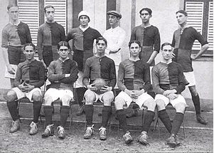

O Flamengo foi fundado em 17 de novembro de 1895 para as disputas de remo. A entrada da equipe no futebol
aconteceu em 1912. Atualmente, o time rubro-negro é o maior vencedor da história do Campeonato Carioca, com 31
títulos. Segundo diversas pesquisas, é o clube com o maior número de torcedores do País.
Os dois principais títulos da história do Flamengo ocorreram em 1981. Comandado pelo ídolo Zico, o time
conquistou a Copa Libertadores da América, em final contra o Cobreloa, do Chile, e o Mundial Interclubes, diante
do Liverpool, da Inglaterra. Foi na década de 1980, também, que o Flamengo conquistou o seu primeiro Campeonato
Brasileiro.

titulos
INTERNACIONAIS
Mundial interclubes - 1981
Taça Libertadores da América - 1981, 2019 e 2022
Copa Mercosul - 1999
Copa Ouro Sul-americana - 1996 (invicto)
Recopa Sul-Americana - 2020
NACIONAIS E INTERESTADUAIS
Campeonato Brasileiro (8 títulos) - 1980, 1982, 1983, 1987, 1992, 2009, 2019 e 2020
Copa do Brasil - 1990 (invicto), 2006, 2013 e 2022
Taça Rio (10 títulos) - 1978 (invicto), 1983, 1985 (invicto), 1986, 1991(invicto), 1996 (invicto), 2000, 2009, 2011 (invicto) e 2019.
Taça da Capital do Rio de Janeiro - 1991 (invicto) e 1993.
Copa Rio - 1991 (invicto).
Torneio Extra do Rio de Janeiro - 1934.
Torneio Aberto do Rio de Janeiro - 1936 (invicto).
Torneio Relâmpago do Rio de Janeiro - 1943.
Torneio Início do Campeonato Carioca - (6 títulos) 1920, 1922, 1946, 1951, 1952, 1959
hino do flamengo
letra:
Uma Vez Flamengo
Sempre Flamengo
Flamengo sempre eu hei de ser
É o meu maior prazer, vê-lo brilhar
Seja na terra, seja no mar
Vencer, vencer, vencer
Uma vez Flamengo,
Flamengo até morrer
Na regata ele me mata,
me maltrata,
me arrebata de emoção no coração
Consagrado no gramado
Sempre amado
Mais cotado nos Fla-Flus
É o ai Jesus
Eu teria um desgosto profundo
Se faltasse
O Flamengo no mundo
Ele vibra, ele é fibra, muita libra,
já pesou
Flamengo até morrer, eu sou.